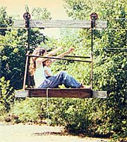

It's often possible to find good prices on parcels of land for which most people have no use: odd-shaped plots ... steep, wooded hillsides ... or, as in the case of my family's purchase, 30 acres on the wrong side of a creek.
Most of our new neighbors thought we were a bit daft when we began to build on a site that can be pretty clanged difficult to get into or out of anytime a hard rain turns the large stream into a raging torrent. (When that happens, the normally peaceful flow has been known to cover half the surrounding bottomland with water, uproot trees, and wash away established bridges.) But from the first time we looked at the property's streams, abundant timber, good pond site, fertile soil, and low price, we knew we'd found all the necessary ingredients for our dreamed-of homestead. Besides, I had a few notions as to how to come to terms with that untamed river.
My first idea, however, met with disaster. The cable suspension footbridge took a week to construct, and one rainstorm swollen creek-aided by a floating tree-to undo. I soon decided that it would be useless to rebuild the twisted mess of boards and cables ... but the failure of that attempt caused a childhood memory to surface.
I decided to build an "Arizona sheep crossing" ... right here in Summertown, Tennessee! As a youngster in the Southwest, you see, I had often spent summer days swimming in a nearby river. While there, on Arizona Indian land, I'd seen an unusual contraption: a small "car" suspended on cables that were attached to steel towers on each side of the river. I later learned that the device was called a "sheep crossing" by the Indian shepherds who used it to traverse the river when it was swollen by seasonal downpours.
My crossing's construction was not complicated or particularly expensive. I first bought 3/8-inch galvanized cable (it was surplus, and thus low in price) from a Nashville supplier. (It's a stiff variety used to support powerlines, and was rated at five tons' breaking strength.) To secure it in place, we bored holes through the base of one fair-sized tree at each side of the stream.
After fastening one end to the anchor tree (using a 3" washer and five cable clamps) on "our side" of the stream, we raised the cable up and passed it through a hole drilled near the top of a treated, 14-foot power pole placed about 20 feet closer to the water than is the anchor tree. (We buried the base of the pole four feet deep, which still put the cable ten feet above normal creek flow.)
Next, we carried the line across the creek and ran it first over the crotch of one large tree and then through the hole drilled in the base of our second anchor tree, which stands about ten feet to the rear.
We fastened the cable to our trusty '52 John Deere "A" tractor, pulled it tight as a fiddle string, and-with another washer-and-clamp assembly holding it securely-were ready to attach the trolley.
For the second part of the project, I splurged and purchased some cast-iron hoist wheels stocked by a local industrial hardware supplier (lawnmower wheels without their tires would have probably done the job just as well). I then installed grease fittings in the rollers, and assembled a carriage ... using angle iron, plywood, andlumber.
Our source of power was a length of inexpensive poly rope-just a few feet longer than twice the crossing's distance-which we ran through two pulleys, with its ends tied to the front and back of the car. (One pulley was attached to the lift pole on our land, and the other was fastened to the first tree on the road side of the stream.) A yank on the rope propels the wheeled carrier in the desired direction.
At first, we simply climbed in and out of our aerial chariot, but some of our friends found such maneuvers difficult ... so we recently built a wooden landing platform, which makes embarking and disembarking a lot easier!
Since we built our sheep crossing, the creek has overflowed its banks on a number of occasions, and filled its bed to the top more times than I can remember. But we've been stranded only once, and that was because the county road flooded, too. (Even then, I was able to cross to the road, with the muddy water slapping the bottom of our thrilling conveyance!)
Actually, much of the time we simply wade the stream, and our four-wheel-drive pickup can be counted on to carry material and supplies across at normal water levels. But we also have the peace of mind of knowing that-regardless of the weather-we can get out whenever we need to ... such as the time when, during one spell of high water, our little girl fell from the porch and had to be rushed to the doctor.
Living on the wrong side of the creek may have some disadvantages, but we've had only one uninvited salesman make it to our house (and he tore his muffler off en route)! Besides, whenever somebody comes to visit, we know he or she really wants to see us.
Better yet, the money we saved by not building an expensive bridge has enabled the Henrie Homestead to construct a 1,800-square-foot workshop and a beautiful pond ... in addition to our energy-efficent decagonal house!
And, of course, we've made friends with the local folks. In fact, they no longer even consider us daft... they think we're downright ingenious!
|
 PHOTO BY THE AUTHOR |
|
|